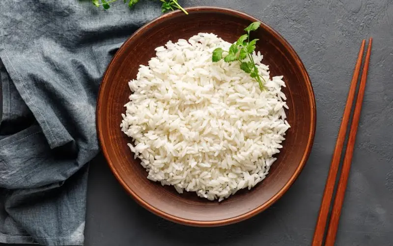

Home
Boiled rice

Description
Cooked rice refers to rice that has been cooked either by steaming or boiling. The terms steamed rice or boiled rice are also commonly used.
Ingredients
Steps
- Put rice in your pot.
- Fill the pot with some water and wash the grains with your hands.
- Drain the water.
- Repeat process until the water comes of almost clear.
- Fill pot with water to cover the rice and have 1cm of water on top.
- Cook on high heat until boiling.
- Once it start boiling, bring to low heat and continue cooking for about 5 minutes.
- Once done, let rest for 5 more minutes.
- Once 5 minutes have passed, gently mix the rice scooping it from the sides of the pot. Let it rest covered 5 more minutes.